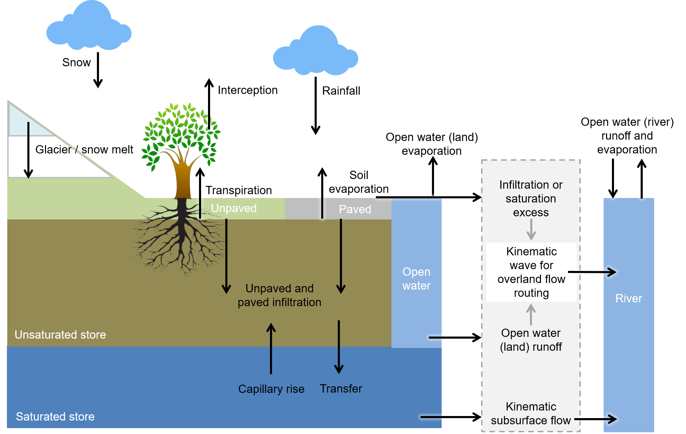

wflow_sbm
Wflow_sbm represents a family of hydrological models that derived from the CQflow model (Köhler et al.,2006) that has been applied in various countries, most notably in Central America. The models have the vertical SBM concept in common. The soil part of wflow_sbm is largely based on the Topog_SBM model but has had considerable changes over time. Topog_SBM is specifically designed to simulate fast runoff processes in small catchments while wflow_sbm model can be applied more widely. The main differences are for the vertical concept SBM of wflow_sbm:
- The unsaturated zone can be split-up in different layers
- The addition of evapotranspiration losses
- The addition of a capillary rise
The vertical SBM concept is explained in more detail in SBM vertical concept.
Topog_SBM uses an element network based on contour lines and trajectories for water routing. Wflow_sbm models differ in how the lateral components:
- river
- land
- subsurface
are solved.
SBM + Kinematic wave
For the lateral components of this wflow_sbm model water is routed over a D8 network, and the kinematic wave approach is used for river, overland and lateral subsurface flow. This is described in more detail Kinematic wave.
Overview of the different processes and fluxes in the wflow_sbm model:

SBM + Groundwater flow
For river and overland flow the kinematic wave approach over a D8 network is used for this wflow_sbm model. For the subsurface domain, an unconfined aquifer with groundwater flow in four directions (adjacent cells) is used. This is described in more detail Groundwater flow.
References
- Köhler, L., Mulligan, M., Schellekens, J., Schmid, S., Tobón, C., 2006, Hydrological impacts of converting tropical montane cloud forest to pasture, with initial reference to northern Costa Rica. Final Technical Report DFID‐FRP Project No. R799.